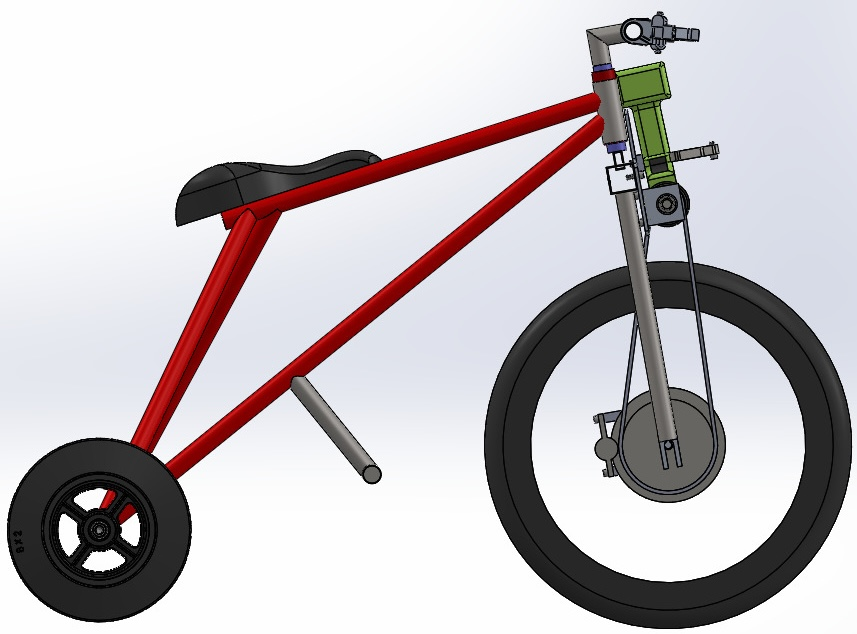
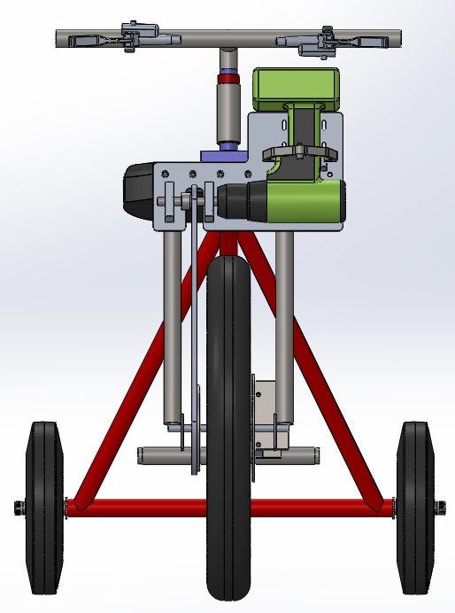
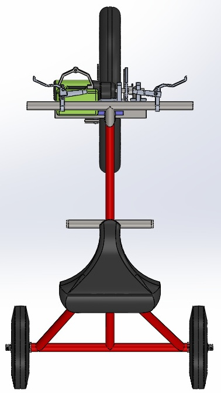
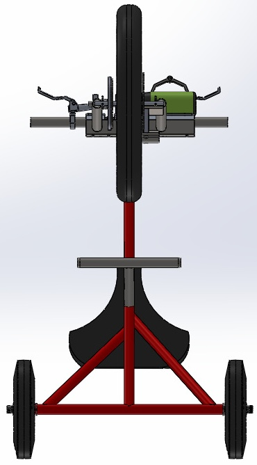

Sep – Dec 2025
Drill-Powered Bike
This project aimed to design and build a hand-drill-powered bike, applying principles from Component Design, including engineering analysis, design iteration, and manufacturing. Our team optimized for maneuverability through extensive CAD modeling, stress and bearing calculations, gear analysis, iterative feedback, and troubleshooting ambiguity.
As the Project Manager for a group of 5, I prioritized clear communication through tools like Trello to track task assignment and completion. To facilitate success, I created an 11-week timeline and oversaw all aspects of the project. My organization helped the team deliver a functional product 2 weeks ahead of schedule. I encouraged collaborative discussions and problem-solving during key decisions, such as how to align the drive chain. I stepped in to resolve conflicts and fill in gaps when needed, contributing heavily to CAD modeling, technical drawings, and playing a major role in manufacturing and assembly. While refining these skills throughout this project, I learned much about persistent leadership, appropriate engineering analysis methods, material selection, and DFM. The bike successfully stayed under a $200 budget / 50 lb weight limit at just $133 / 37.5 lb.
Maneuverability Competition: 4th Place — 48.4 seconds
The Run Off: 27 Teams, 13 Competitors

Culminating the semester at the 2025 Run Off was so fun! All our hard work had paid off in a bike that was fully functional, fast, and had a very unique design compared to others. Our group, Team Rocket, completed the Maneuverability course multiple times, weaving through cones, passing under a 3ft tunnel, and making 2 5ft radius turns — despite the unanticipated snowfall the day before!







We began by collaborating on the original design. I facilitated discussion about which features and dimensions we wanted and digitally drew out the ideas. I ended up completing most of the preliminary SolidWorks CAD, including the frame, front fork, drill plate, and drill. The hours I put into the CAD model were worth it, as the majority of these items remained consistent throughout. I also created most of the drawings. We had a Design Review with the course team and then reworked some of the design and drawings based on their feedback. I met with the TAs and machinists in advance of this presentation to begin implementing their advice.